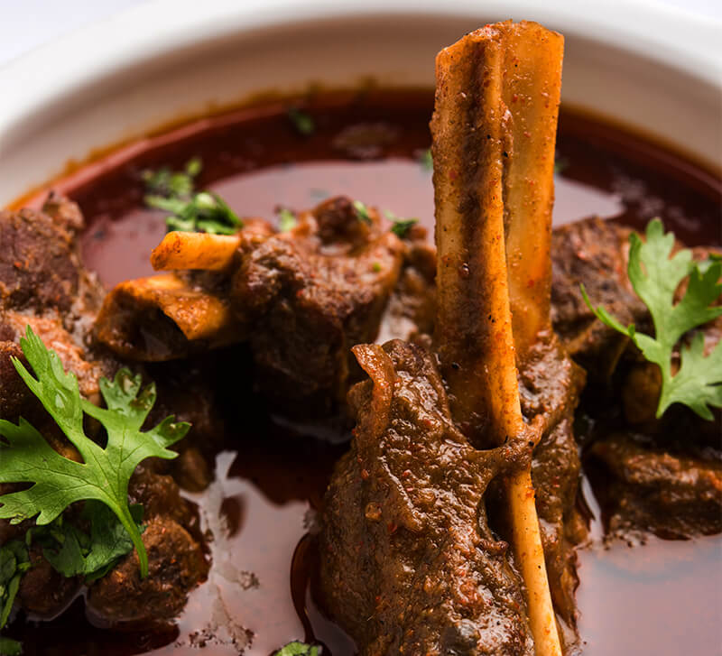

Malvani Mutton

Malvani Mutton Curry is also known as Muttonache Rassa (in Marathi).
It is a traditional recipe from the South Konkan region of Maharashtra, in India.
Malvan being a coastal area in Konkan, it has its own distinct way of cooking food.
Malvani cuisine uses coconut liberally in various forms such as grated, dry grated, fried, coconut paste and coconut milk.
Many masalas have dried red chilies and other spices like coriander seeds, peppercorns, cumin, cardamom, ginger, garlic, etc.
The tender mutton once coated and cooked in the masala, will literally fall off the bone,
a dish that you will want to make for your family this weekend.
Ingredients
- 2 lbs of marinated mutton
- 1/2 tsp jeera
- 2 tbsp malvani masala
- 1 tbsp garam masala
- 1 large onion
- 2 tbsp of oil
- 2 tbsp of vaatan
- 2 finely chopped green chillies
- finely chopped coriander for garnish
Ingredients for vaatan:
- 1 1/2 cup grated dry coconut
- 1 medium onion (roughly chopped)
- Water as required.
- 3 cups of water
Steps
- First prepare the vaatan and keep aside
- In a frying pan lightly roast coconut and onion until light golden in color
- Set aside to cool
- Transfer it to a blender
- Add 3/4 cup of water and blend it to a fine paste
- Heat oil in a pressure cooker. Add jeera and chopped onion.
Saute the onion until golden brown.
- Now add the mutton pieces.
Add salt, turmeric and mix it properly.
- Add water and pressure cook until 10 whistles or approx 30 mins.
- Switch of the heat. Once the pressure has subsided remove the lid of the cooker
- Heat oil in another pan, fry vaatan paste with malvani masala and garam masala
- Fry the vaatan and masala mixture till it leaves oil and darkens in color
- Add vaatan mix in the pressure cooker
- Cook on slow/medium flame for another 15 mins until the coconut paste has
completely blended and the curry becomes thick.
- Remove from heat. Garnish with chopped coriander.
- Serve hot with some rice or naan.